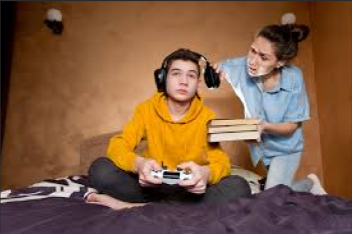

O vício em videogames é caracterizado pelo uso compulsivo e prolongado de jogos eletrônicos, comprometendo atividades essenciais como estudos, trabalho, sono e convívio com as pessoas, pessoas afetadas podem apresentar sintomas como ansiedade, irritabilidade, isolamento e até negligência com a própria saúde.
Como Afeta Jovens e Adolescentes?
Rendimento Escolar: Quedas nas notas, falta de concentração e absentismo. Saúde Mental: Aumento de ansiedade, irritabilidade e isolamento. O jogo vira um refúgio para escapar de problemas reais. Vida Social: Preferência pelo mundo virtual, levando ao isolamento e ao prejuízo no desenvolvimento de habilidades sociais. Saúde Física: Problemas de postura, distúrbios do sono devido à luz das telas e sedentarismo.
Os adolescentes são mais vulneráveis porque o cérebro ainda está em desenvolvimento, tornando-os mais suscetíveis a recompensas imediatas.
· O que os Pais Podem Fazer:
Buscar compreender o que atrai o jovem no jogo; Estabelecer limites claros e consistentes para o tempo de tela; Oferecer alternativas de lazer e atividades em família; Buscar ajuda profissional (psicólogo) quando perceberem que não conseguem controlar a situação.
